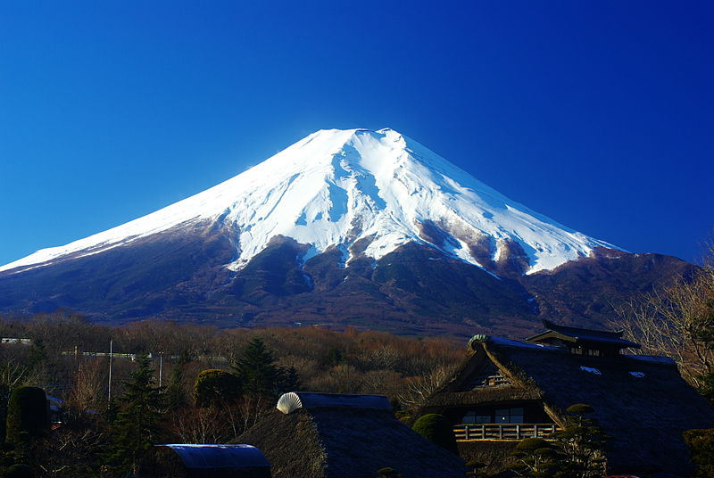
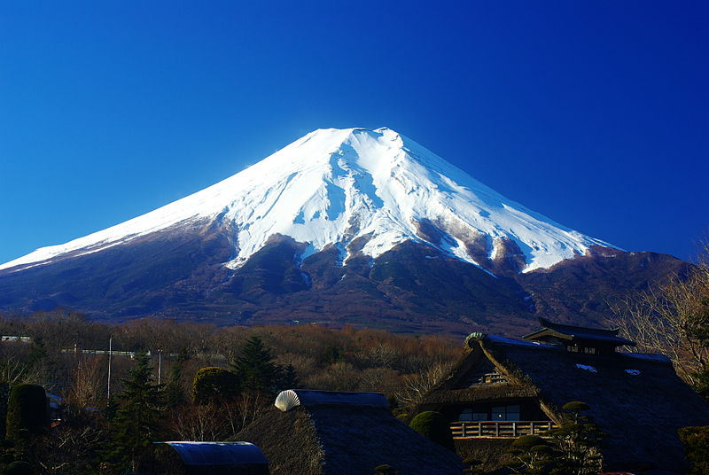

Prethodno poglavlje Iduće poglavlje
Mount Fuji (富士山, Fujisan, Japanese: [ɸɯꜜ(d)ʑisaɴ] (audio speaker iconlisten)), located on the island of Honshū (the "mainland"), is the highest mountain in Japan, standing 3,776.24 m (12,389.2 ft). It is the second-highest volcano located on an island in Asia (after Mount Kerinci on the island of Sumatra), and seventh-highest peak of an island on Earth.[1] Mount Fuji is an active stratovolcano that last erupted from 1707 to 1708. The mountain is located about 100 km (62 mi) southwest of Tokyo and is visible from there on clear days. Mount Fuji's exceptionally symmetrical cone, which is covered in snow for about five months of the year, is commonly used as a cultural icon of Japan and it is frequently depicted in art and photography, as well as visited by sightseers and climbers.
Mount Fuji is one of Japan's "Three Holy Mountains" (三霊山, Sanreizan) along with Mount Tate and Mount Haku. It is a Special Place of Scenic Beauty and one of Japan's Historic Sites. It was added to the World Heritage List as a Cultural Site on June 22, 2013. According to UNESCO, Mount Fuji has "inspired artists and poets and been the object of pilgrimage for centuries". UNESCO recognizes 25 sites of cultural interest within the Mount Fuji locality. These 25 locations include the mountain and the Shinto shrine, Fujisan Hongū Sengen Taisha, as well as the Buddhist Taisekiji Head Temple founded in 1290, later depicted by Japanese ukiyo-e artist Katsushika Hokusai.
The current kanji for Mount Fuji, 富 and 士, mean "wealth" or "abundant" and "a man of status" respectively. However, the name predates kanji, and these characters are ateji, meaning that they were selected because their pronunciations match the syllables of the name but do not carry a meaning related to the mountain.
The origin of the name Fuji is unclear, having no recording of it being first called by this name. A text of the 9th century, Tale of the Bamboo Cutter, says that the name came from "immortal" (不死, fushi, fuji) and also from the image of abundant (富, fu) soldiers (士, shi, ji) ascending the slopes of the mountain. An early folk etymology claims that Fuji came from 不二 (not + two), meaning without equal or nonpareil. Another claims that it came from 不尽 (not + to exhaust), meaning never-ending.